Databricks Apps 가이드
Databricks 워크스페이스 안에서 웹앱을 만들고, 설정하고, 배포하는 방법을 이 저장소의 예제 앱과 실제 화면으로 설명합니다.
스크린샷의 이메일, 워크스페이스 주소·ID, 각종 식별자는 예시 값(user@example.com, 1234567890123456 등)으로 가린 것입니다.
1. 한눈에 보기
무엇인가
워크스페이스 안의 서버리스 컨테이너에서 도는 웹앱 호스팅 기능입니다.
무엇으로 만드나
Python(Streamlit, Dash, Gradio, Flask, FastAPI)이나 Node.js(React, Express 등)로 만듭니다.
누가 접속하나
워크스페이스에 로그인한 사용자만 접속합니다. 익명 공개는 할 수 없습니다.
무엇이 핵심인가
앱 자신의 권한과 접속한 사용자의 권한, 두 가지 신원을 구분해 쓰는 것입니다.
이 프로젝트의 현재 상태
| 항목 | 값 |
|---|---|
| GitHub 저장소 | HMWKR/DatabricksAppsTest (public), 기본 브랜치 main |
| 앱 이름 | databricksappstestt (CLI 프로필 DEV_USER, AWS, Free Edition 워크스페이스) |
| 배포 방식 | Git 저장소 배포. 앱에 저장소 URL이 등록돼 있고 main 브랜치를 배포합니다. |
| 붙어 있는 리소스 | Genie Agent 1개 (리소스 키 genie-space, 권한 Can edit) |
| 사용자 권한 scope | sql, genie, files, model-serving, postgres, catalog.catalogs:read 등 |
| 컴퓨트 | Medium (최대 2 vCPU, 6 GB) |
| 자동 배포 | 꺼져 있음. push해도 앱에 자동 반영되지 않습니다. |
직접 확인 위 값은 databricks apps get databricksappstestt 결과와 워크스페이스 화면에서 읽은 것입니다.
2. Databricks Apps란
Databricks Apps는 데이터·AI 웹앱을 워크스페이스 안에서 바로 호스팅하는 기능입니다. 서버나 컨테이너를 직접 만들지 않고, 코드와 설정 파일만 올리면 플랫폼이 빌드하고 실행합니다. 문서 확인
요청이 앱에 도달하는 길
0.0.0.0:DATABRICKS_APP_PORT에서 응답알아둘 기본 성질
- URL은 고정입니다. 형식은
https://<앱이름>-<워크스페이스ID>.<리전>.databricksapps.com이고, 앱 이름과 URL은 만든 뒤 바꿀 수 없습니다. 문서 확인 - 앱마다 전용 서비스 프린시펄이 생깁니다. 앱을 만들 때 자동 생성되고, 다른 것으로 바꾸거나 재사용할 수 없습니다. 문서 확인
- 상태를 저장하지 않습니다. 재시작하면 메모리와 로컬 디스크 내용이 사라집니다. 남겨야 할 데이터는 테이블, Unity Catalog 볼륨, Lakebase에 둡니다. 문서 확인
- 실행 환경은 정해져 있습니다. Ubuntu 22.04, Python 3.11, Node.js 22입니다. 이 앱의 Environment 화면에는 Python 3.11.18, Node.js v22.23.4로 표시됩니다. 문서 확인 직접 확인
앱 상태
| 상태 | 의미 | 과금 |
|---|---|---|
| Running | 앱이 실행 중이고 접속할 수 있습니다. | 발생 |
| Deploying | 코드를 가져와 빌드하고 시작하는 중입니다. | 없음 |
| Stopped | 중지된 상태입니다. 다시 시작할 수 있습니다. | 없음 |
| Crashed | 앱이 비정상 종료된 상태입니다. | 없음 |
문서 확인 과금은 실행 중인 컴퓨트 시간에 대해, 할당된 용량 기준으로 매겨집니다.
3. 할 수 있는 것과 한계
할 수 있는 것
- 대시보드, 데이터 입력 폼, 내부 도구, AI 챗 화면 같은 웹앱을 워크스페이스 사용자에게 제공합니다.
- SQL warehouse로 테이블을 조회하고, 모델 서빙 엔드포인트와 Genie에 질문을 보냅니다.
- 접속한 사용자의 권한으로 데이터를 조회해, Unity Catalog의 사용자별 권한을 그대로 적용합니다.
- Git 저장소의 브랜치·태그·커밋을 지정해 배포하고, 조건이 맞으면 push에 맞춰 자동 배포합니다.
- 앱 접속자 수, 가동률, 요청 수, 지연 시간, CPU·메모리 사용량을 Insights 화면에서 봅니다. 직접 확인
할 수 없거나 맞지 않는 것
- 익명·퍼블릭 공개. 워크스페이스 로그인이 반드시 필요합니다. 문서 확인
- 무거운 데이터 처리. 문서는 앱 컴퓨트가 화면 렌더링용이라고 설명합니다. 큰 연산은 SQL warehouse, 잡, 모델 서빙에 맡깁니다. 문서 확인
- 시스템 패키지 설치.
apt-get같은 특권 작업은 할 수 없습니다. 문서 확인 - 직접 TLS 처리. 네트워크는 플랫폼이 관리하며, 앱은 HTTP/2 cleartext(H2C)를 지원해야 합니다. 문서 확인
- 로컬 파일에 데이터 보관. 재시작하면 사라집니다. 문서 확인
한도
| 항목 | 한도 | 출처 |
|---|---|---|
| 파일 크기 | 파일 하나가 10 MB를 넘으면 배포가 실패합니다. | 문서 확인 |
| 워크스페이스당 앱 수 | 100개 | 문서 확인 |
| 종료 유예 | SIGTERM을 받고 15초 안에 종료하지 않으면 강제 종료됩니다. | 문서 확인 |
| 로그 보존 | 앱 컴퓨트가 종료되면 로그가 남지 않습니다. | 문서 확인 |
| 유휴 시 자동 중지, 요청 타임아웃 값, WebSocket 지원 | 문서에서 찾지 못했습니다. | 미확인 |
컴퓨트 크기와 비용
| 크기 | CPU | 메모리 | 시간당 사용량 |
|---|---|---|---|
| Medium (기본) | 최대 2 vCPU | 6 GB | 0.5 DBU |
| Large | 최대 4 vCPU | 12 GB | 1 DBU |
| XLarge | 최대 12 vCPU | 48 GB | 3 DBU |
문서 확인 XLarge는 일부 리전에서만 쓸 수 있습니다. DBU당 금액은 클라우드와 요금제에 따라 다르며 이 가이드에서는 확인하지 못했습니다. 미확인
유료 워크스페이스에서는 system.billing.usage 테이블에서 billing_origin_product = 'APPS'로 앱 비용을 추적합니다. 문서 확인
Free Edition 워크스페이스의 차이
이 프로젝트의 워크스페이스는 화면 좌측 상단에 Free Edition으로 표시됩니다. 직접 확인 Free Edition에는 다음 제한이 있습니다. 문서 확인
- 비용 없이 제공되며, 상업적 용도로 쓸 수 없습니다.
- 계정당 앱은 3개까지입니다.
- 앱은 시작·업데이트·재배포 후 최대 24시간 실행되고 자동으로 중지됩니다. 언제든 다시 시작할 수 있습니다.
- 사용량 할당을 넘으면 그날 남은 시간 동안 컴퓨트가 꺼집니다. 데이터와 설정은 지워지지 않습니다.
- 외부 인터넷 접속은 신뢰 도메인 일부로 제한됩니다.
- SQL warehouse는 1개(2X-Small)까지입니다.
4. 시작 전 준비
| 도구 | 문서의 요구 사항 | 이 PC |
|---|---|---|
| Databricks CLI | 0.229.0 이상 | v1.14.1 |
| Python | 3.11 이상 | 3.13.5 |
| Node.js | 22 이상 (Node 앱을 만들 때) | 이 프로젝트에서는 쓰지 않음 |
| uv | run-local --prepare-environment를 쓸 때 필요 | 0.11.19 |
문서 확인 직접 확인
CLI 인증
문서는 사용자 로그인 방식(OAuth U2M)을 권장합니다. 문서 확인 로그인하면 ~/.databrickscfg에 프로필이 저장됩니다.
# 프로필 만들기 (브라우저 로그인)
databricks auth login --host https://<워크스페이스 주소> --profile DEV_USER
# 등록된 프로필과 유효 여부 확인
databricks auth profiles이 PC에는 DEV_USER(기본), DEV_SP, PROD_SP 세 프로필이 있고 모두 유효합니다. 명령마다 -p DEV_USER로 프로필을 고릅니다. 직접 확인
자주 쓰는 CLI 명령
| 하려는 일 | 명령 |
|---|---|
| 앱 목록 보기 | databricks apps list -p DEV_USER |
| 앱 상세 보기 | databricks apps get databricksappstestt -p DEV_USER |
| Git 브랜치 배포 | databricks apps deploy databricksappstestt --git-branch main -p DEV_USER |
| 배포 이력 보기 | databricks apps list-deployments databricksappstestt -p DEV_USER |
| 로그 보기 | databricks apps logs databricksappstestt -p DEV_USER |
| 중지 / 시작 | databricks apps stop <앱> / databricks apps start <앱> |
| 로컬 실행 | databricks apps run-local |
직접 확인 명령과 옵션은 CLI v1.14.1의 --help 출력 기준입니다.
5. 앱 만들기
앱 목록 화면
워크스페이스의 Apps 화면에서 내 앱의 컴퓨트 상태를 보고, 우측 상단 Create app으로 새 앱을 만듭니다.

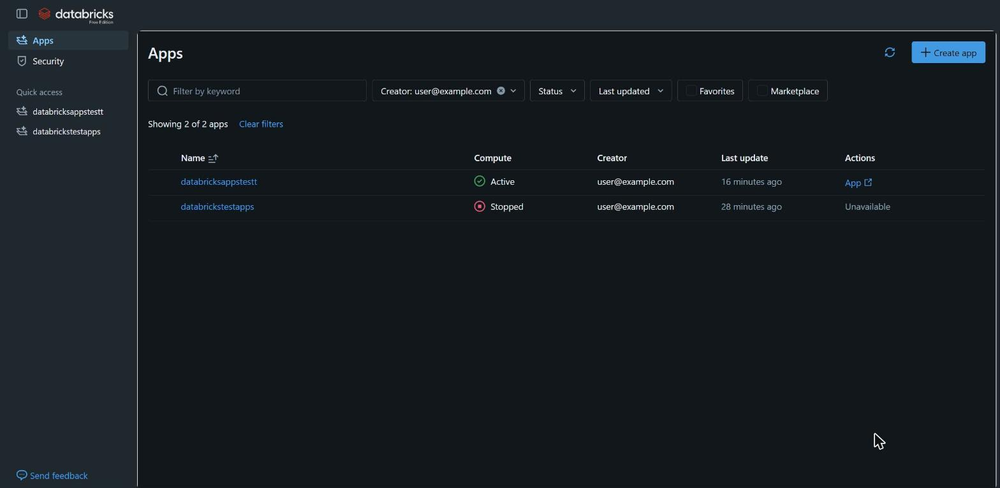
만드는 방법 두 가지

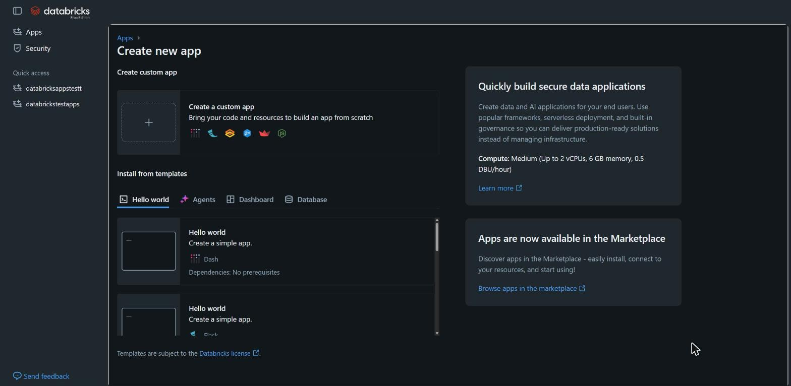
| 방법 | 설명 | 배포 |
|---|---|---|
| Create a custom app | 내 코드와 리소스로 처음부터 만듭니다. 이 프로젝트가 쓴 방법입니다. | 자동으로 배포되지 않습니다. 코드를 올린 뒤 직접 배포합니다. |
| Install from templates | Dash, Flask, Gradio, Node.js, Shiny, Streamlit의 Hello world와 Agents, Dashboard, Database 템플릿이 있습니다. | 만들면 자동으로 배포됩니다. |
문서 확인 직접 확인
커스텀 앱 만들기 단계
- 이름과 설명. 이름에는 소문자, 숫자, 하이픈만 쓸 수 있고 만든 뒤 바꿀 수 없습니다. 이름이 URL에 들어가므로 신중히 정합니다.
- Configure Git. Git 저장소에서 배포하려면 저장소 URL과 제공자(GitHub 등)를 넣습니다.
- Configure. 선택 항목 네 가지를 정합니다.
- App resources: 앱의 서비스 프린시펄이 접근할 리소스
- User authorization: 사용자 대신 API를 부를 때 쓸 scope
- App Telemetry: 로그·지표를 내보낼 Unity Catalog 위치
- Compute: 인스턴스 크기
문서 확인 이 항목들은 만든 뒤에도 Settings 화면에서 바꿀 수 있습니다(7장).
이 프로젝트의 앱 이름 databricksappstestt는 끝에 t가 두 번 들어가 있습니다. 이름을 바꾸려면 앱을 지우고 새로 만들어야 하며, 그러면 URL과 서비스 프린시펄도 새로 생깁니다.
6. 프로젝트 파일
이 저장소의 루트가 곧 앱의 소스입니다.
DatabricksAppsTest/
├─ app.py # Streamlit 앱 본체
├─ app.yaml # 실행 명령과 환경변수
├─ requirements.txt # 추가로 설치할 Python 패키지
└─ docs/ # 이 가이드 (앱 실행과 무관)app.yaml
앱을 어떻게 시작하고 어떤 환경변수를 줄지 정하는 파일입니다. 프로젝트 루트에 두며, 확장자는 .yaml과 .yml 모두 됩니다. 문서 확인
# 앱을 시작하는 명령. 셸을 거치지 않으므로 배열로 적는다.
command: ["streamlit", "run", "app.py"]
env:
# 앱에 추가한 리소스(키: genie-space)의 값을 환경변수로 받는다.
- name: GENIE_SPACE_ID
valueFrom: genie-space
# 값을 직접 적는 일반 환경변수. 비밀 값은 여기에 적지 않는다.
- name: STREAMLIT_BROWSER_GATHER_USAGE_STATS
value: "false"| 필드 | 설명 |
|---|---|
command | 시작 명령을 배열로 적습니다. 셸에서 실행되지 않으므로 파이프나 &&는 쓸 수 없고, 값이 치환되는 변수는 DATABRICKS_APP_PORT 하나뿐입니다. |
env[].name | 환경변수 이름입니다. |
env[].value | 값을 직접 적습니다. 저장소에 그대로 남으므로 비밀 값에는 쓰지 않습니다. |
env[].valueFrom | 앱에 추가한 리소스의 키를 적으면 그 리소스의 값이 들어옵니다(9장). |
문서 확인
command를 생략하면
- Python 앱은
python <첫 번째 .py 파일>로 실행합니다. package.json이 있으면npm run start로 실행합니다.
문서 확인 Streamlit 앱은 python app.py로는 서버가 뜨지 않으므로 command를 꼭 적어야 합니다.
의존성 파일
| 있는 파일 | 설치 방식 |
|---|---|
requirements.txt | pip install -r requirements.txt |
pyproject.toml + uv.lock (requirements.txt 없음) | uv sync |
package.json | npm install, 그다음 build 스크립트 실행 |
package.json + pnpm-lock.yaml | pnpm install --frozen-lockfile. 이 경우 command를 꼭 적어야 합니다. |
문서 확인
사전 설치 패키지
pip 방식 앱에는 다음 패키지가 미리 들어 있습니다. uv 방식 앱과 Node.js 앱에는 사전 설치가 없습니다. 문서 확인
| 패키지 | 버전 | 패키지 | 버전 |
|---|---|---|---|
| streamlit | 1.38.0 | fastapi | 0.115.0 |
| dash | 2.18.1 | uvicorn[standard] | 0.30.6 |
| gradio | 4.44.0 | gunicorn | 23.0.0 |
| flask | 3.0.3 | databricks-sdk | 0.33.0 |
| shiny | 1.1.0 | databricks-sql-connector | 3.4.0 |
| plotly | 5.24.1 | mlflow-skinny | 2.16.2 |
이 프로젝트의 requirements.txt는 databricks-sdk==0.133.0 한 줄입니다. 사전 설치된 0.33.0보다 최신 버전의 Genie API를 쓰기 위해 고정했습니다. 문서도 requirements.txt에는 정확한 버전을 고정하라고 권장합니다. 문서 확인
플랫폼이 넣어 주는 환경변수
| 변수 | 내용 |
|---|---|
DATABRICKS_APP_NAME | 앱 이름 |
DATABRICKS_APP_PORT | 앱이 리슨해야 하는 포트. 이 앱에서는 8000입니다. |
DATABRICKS_HOST | 워크스페이스 주소. 이 앱에서는 https:// 없이 호스트 이름만 들어옵니다. |
DATABRICKS_WORKSPACE_ID | 워크스페이스 ID |
DATABRICKS_CLIENT_ID | 앱 서비스 프린시펄의 OAuth 클라이언트 ID |
DATABRICKS_CLIENT_SECRET | 앱 서비스 프린시펄의 OAuth 시크릿 |
문서 확인 직접 확인
프레임워크용 변수도 함께 들어옵니다. Streamlit은 STREAMLIT_SERVER_PORT, STREAMLIT_SERVER_ADDRESS=0.0.0.0, STREAMLIT_SERVER_HEADLESS=true가 설정돼 있어 포트를 따로 지정하지 않아도 됩니다. Gradio, Flask, Uvicorn도 각자의 포트·호스트 변수가 설정됩니다. 문서 확인
이 앱의 Environment 화면에는 변수가 26개 보이며, 위 목록 외에 DATABRICKS_APP_URL도 있습니다. 직접 확인
7. 설정 화면 둘러보기
앱을 열면 왼쪽에 메뉴 여덟 개가 있습니다. 아래 순서대로 설명합니다. 직접 확인
Overview

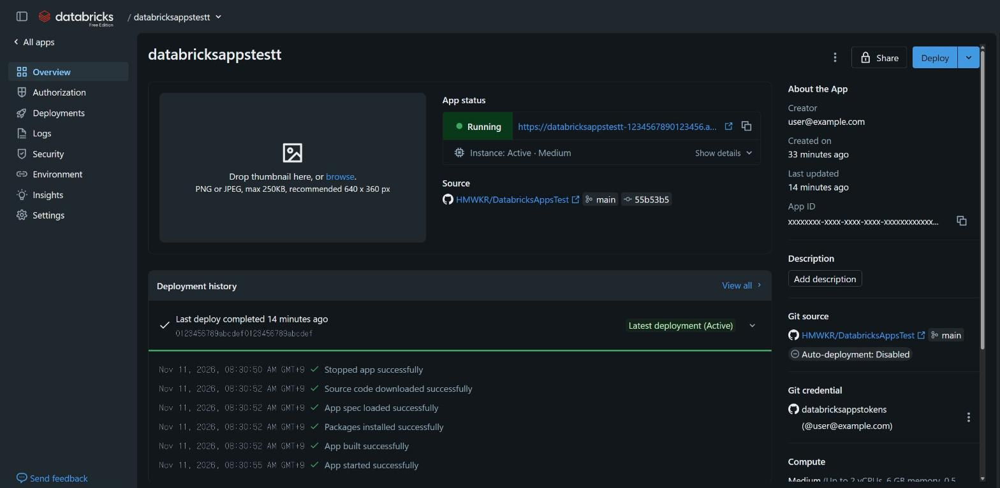
- App status: 앱 상태와 접속 URL, 인스턴스 상태·크기
- Source: 배포된 저장소, 브랜치, 커밋
- Deployment history: 최근 배포의 단계별 기록
- Git source: 연결된 저장소와 자동 배포 여부(이 앱은 Disabled)
- Git credential: 저장소 접근에 쓰는 자격증명
- Share: 다른 사용자에게 앱 권한 부여
- Deploy: 새 배포 시작
Authorization

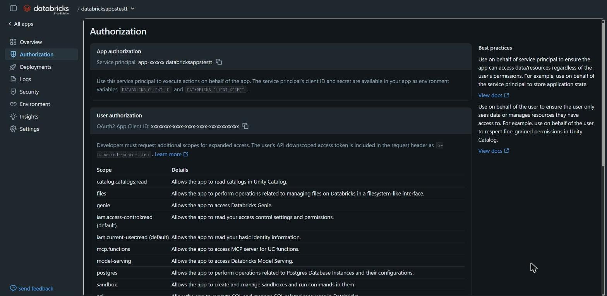
두 가지 신원을 읽기 전용으로 보여 줍니다. 화면 오른쪽의 Best practices는 언제 어느 쪽을 쓸지 요약합니다. 자세한 내용은 8장에서 다룹니다.
Deployments

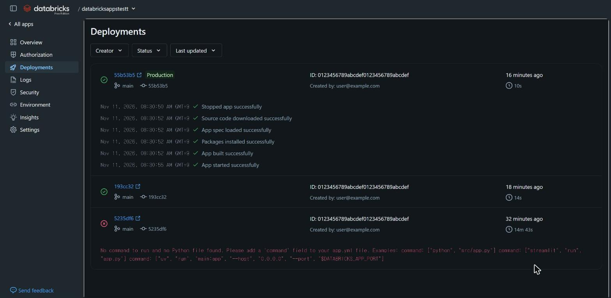
배포마다 커밋, 브랜치, 걸린 시간, 단계별 기록이 남습니다. 이 앱의 첫 배포(5235df6)는 저장소에 README만 있어 실패했고, 예제 앱을 추가한 뒤의 배포는 성공했습니다. 성공한 배포는 다음 순서로 진행됩니다.
- Stopped app successfully
- Source code downloaded successfully
- App spec loaded successfully
- Packages installed successfully
- App built successfully
- App started successfully
롤백 전용 기능은 없으며, 이전 버전으로 돌아가려면 그 커밋을 다시 배포합니다. 문서 확인
Logs

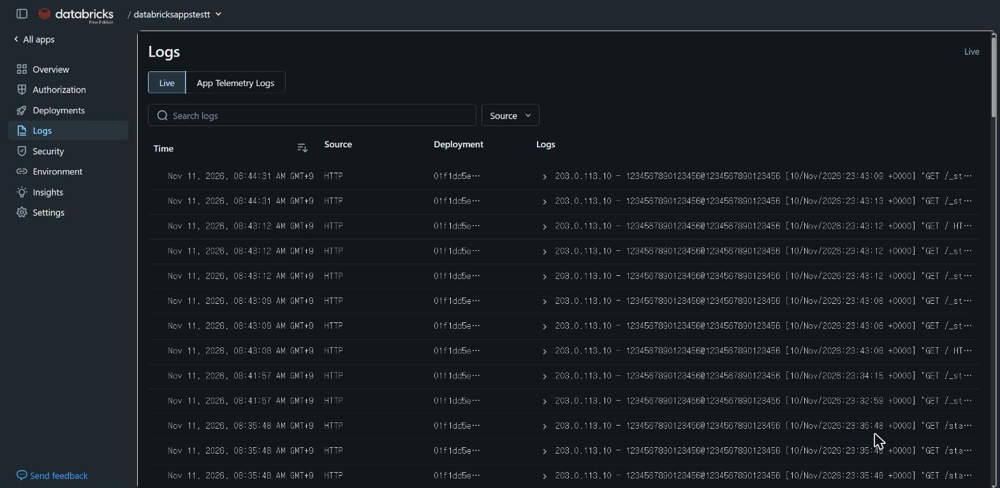
- 앱이
stdout과stderr로 내보낸 것만 수집됩니다. 파일에 쓴 로그는 보이지 않습니다. 문서 확인 - 컴퓨트가 종료되면 로그가 사라집니다. 오래 남기려면 App telemetry를 설정합니다. 문서 확인
- Source로 로그 종류를 고르고, 검색창으로 내용을 찾습니다.
Security

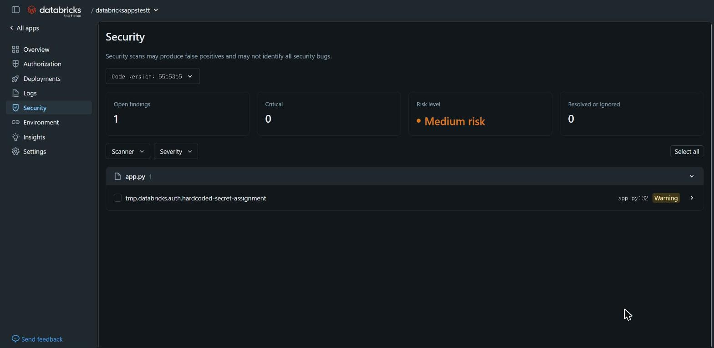
배포된 코드를 자동으로 스캔해 발견 항목을 보여 줍니다. 화면에도 스캔이 오탐을 낼 수 있다고 적혀 있습니다.
app.py:32의 USER_TOKEN_HEADER = "X-Forwarded-Access-Token"이 하드코딩된 비밀 값으로 경고됐습니다. 실제 값은 헤더 이름이고 토큰이 아닙니다. 변수 이름에 TOKEN이 들어가면 이런 경고가 날 수 있으니, 발견 항목은 코드를 열어 실제 값을 보고 판단합니다.
Environment

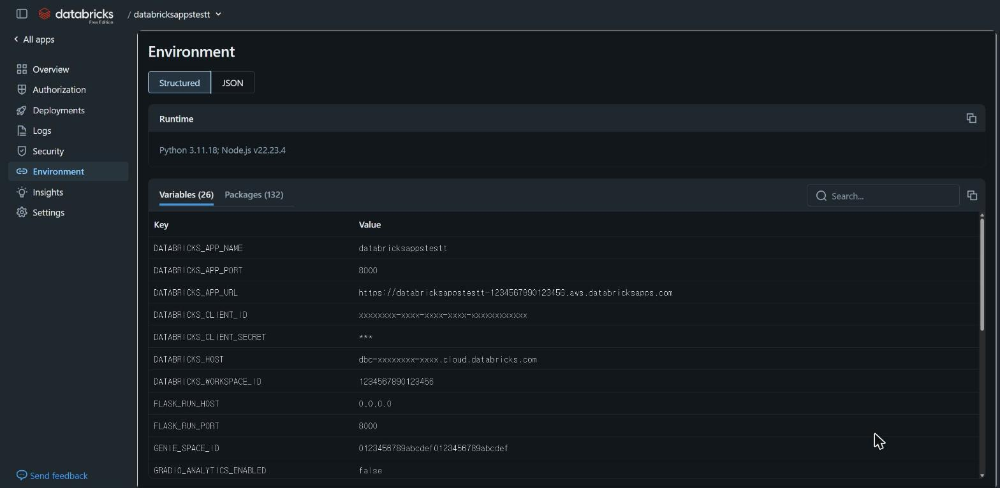
- Runtime: Python과 Node.js 버전
- Variables: 앱에 들어간 환경변수 전체. 시크릿은
***로 가려집니다. - Packages: 설치된 패키지와 버전(이 앱은 132개)
valueFrom이 기대한 값으로 들어왔는지, 패키지 버전이 맞는지 확인할 때 가장 먼저 볼 화면입니다.
Insights

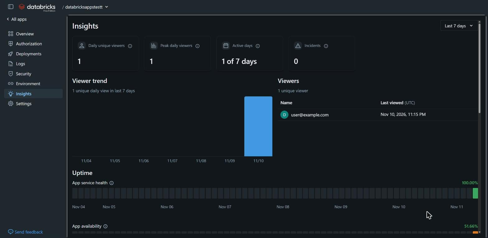
- Viewers: 일별 고유 접속자 수와 접속자 목록
- Uptime: 앱 서비스 상태와 가용률
- System metrics: 분당 요청 수, 지연 시간(P50·P95·P99), CPU·메모리 사용량
Settings
앱의 설정을 바꾸는 화면입니다. 구간이 다섯 개 있습니다.
General

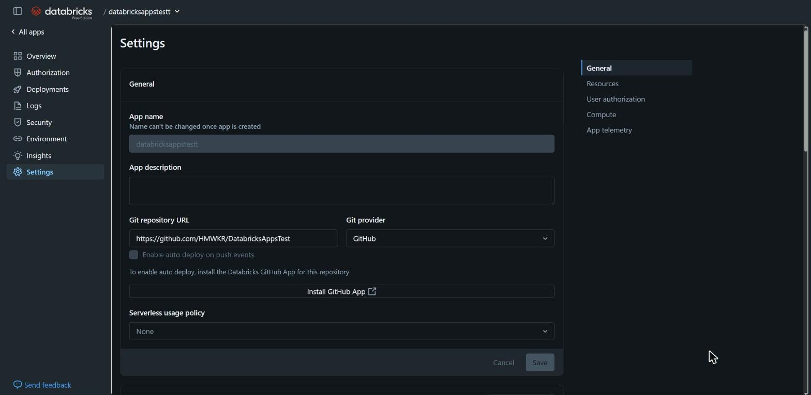
| 항목 | 설명 |
|---|---|
| App name | 바꿀 수 없습니다. |
| App description | 앱 설명. 자유롭게 바꿉니다. |
| Git repository URL / Git provider | 배포할 저장소와 제공자 |
| Enable auto deploy on push events | push하면 자동으로 배포합니다. 이 앱에서는 체크할 수 없는 상태입니다(11장). |
| Serverless usage policy | 비용을 묶어 추적하는 사용 정책 |
Resources와 User authorization

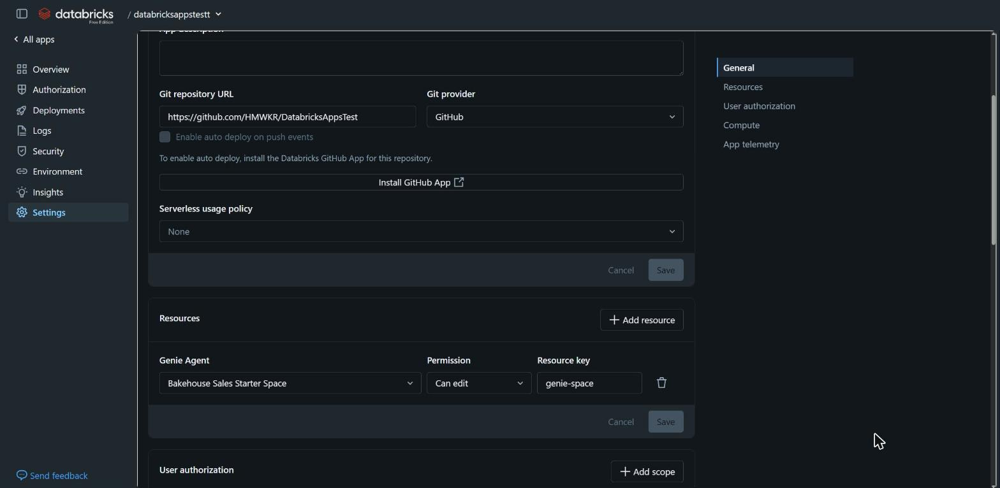
app.yaml의 valueFrom에 적는 이름입니다.- Resources: Add resource로 리소스를 추가하고, 권한과 리소스 키를 정합니다.
- User authorization: Add scope로 사용자 대신 쓸 scope를 추가하고, 휴지통 아이콘으로 뺍니다.
Compute와 App telemetry

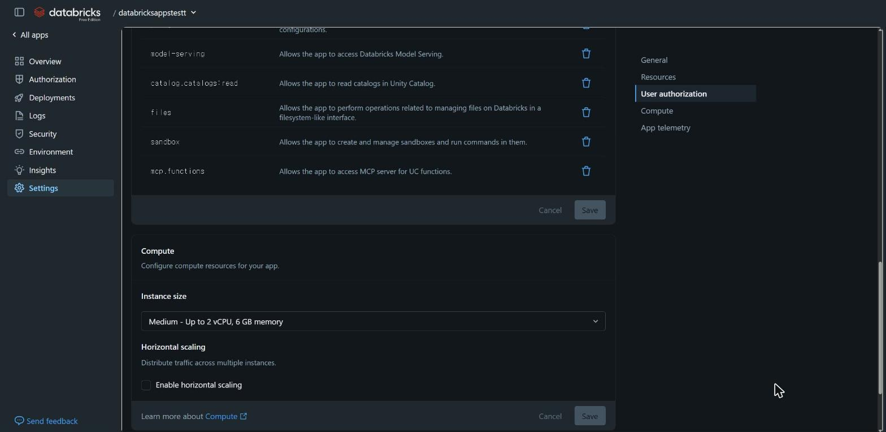
- Instance size: Medium, Large, XLarge 중에서 고릅니다.
- Horizontal scaling: 트래픽을 여러 인스턴스에 나눕니다. 앱당 1~5개 인스턴스이며, 비용은 인스턴스 수에 비례합니다. 문서 확인
- App telemetry: 서버 로그와 OTEL 지표·로그·트레이스를 Unity Catalog로 내보냅니다.
8. 인증과 권한
Databricks Apps에서 가장 중요한 개념입니다. 앱이 Databricks 자원에 접근할 때 쓸 수 있는 신원이 두 가지입니다.
| 앱 인증 (App authorization) | 사용자 인증 (User authorization) | |
|---|---|---|
| 누구의 권한 | 앱 전용 서비스 프린시펄 | 지금 접속한 사용자 |
| 받는 방법 | 환경변수 DATABRICKS_CLIENT_ID, DATABRICKS_CLIENT_SECRET | 요청 헤더 x-forwarded-access-token |
| 권한 범위 | 서비스 프린시펄에 부여한 권한 전부 | 앱에 설정한 scope 안에서, 그 사용자가 가진 권한만 |
| 모든 접속자에게 | 같은 결과 | 사용자마다 다른 결과 |
| 문서가 권하는 용도 | 사용자가 누구인지와 무관한 작업. 예: 앱 상태 저장, 공용 설정 읽기 | 사용자 맥락으로 접근해야 하는 작업. 예: 사용자별 권한이 걸린 테이블 조회 |
문서 확인 두 방식은 한 앱에서 함께 쓸 수 있습니다. 문서는 사용자 대리 인증(on-behalf-of-user)이라는 이름도 함께 씁니다.
코드에서 쓰는 법
import os
import streamlit as st
from databricks.sdk import WorkspaceClient
# 앱 권한: 환경변수의 서비스 프린시펄 자격증명을 SDK가 자동으로 찾는다.
app_client = WorkspaceClient()
# 사용자 권한: 요청 헤더의 토큰으로 클라이언트를 만든다.
user_token = st.context.headers.get("x-forwarded-access-token")
user_client = WorkspaceClient(
host=os.getenv("DATABRICKS_HOST"), token=user_token, auth_type="pat"
)auth_type="pat"을 적는 이유는, 컨테이너에 서비스 프린시펄 자격증명이 이미 환경변수로 있어서 토큰을 함께 주면 SDK가 인증 수단을 하나로 정하지 못하기 때문입니다. 직접 확인
사용자 권한 scope
사용자 토큰으로 할 수 있는 일은 앱에 설정한 scope로 제한됩니다. 기본으로는 iam.current-user:read와 iam.access-control:read만 있어, 사용자가 누구인지만 알 수 있습니다. 문서 확인
| scope | 허용하는 일 |
|---|---|
sql | 사용자 대신 SQL을 실행하고 SQL 관련 자원을 관리 |
sql:restricted-query | 사용자 대신 읽기 전용 SQL 실행 |
genie | Genie 접근 |
files | 파일 관리 |
model-serving | 모델 서빙 접근 |
postgres | Postgres(Lakebase) 인스턴스 작업 |
catalog.catalogs:read | Unity Catalog의 카탈로그 읽기 |
문서 확인 직접 확인 이 밖에 vector-search, apps, ai-gateway, ai-functions 등이 있고, 워크스페이스 관리자가 허용 scope를 제한할 수 있습니다. 사용자 토큰은 앱이 있는 워크스페이스 안에서만 유효합니다.
이 프로젝트에서 실제로 겪은 일: 권한 빌려 쓰기
예제 앱의 첫 버전은 Genie 질문을 앱 권한으로 보낼지 사용자 권한으로 보낼지 화면에서 고를 수 있었습니다. 이 구조에서는 앱 사용 권한만 있는 사람도 앱 권한을 골라, 서비스 프린시펄이 가진 테이블 권한으로 데이터를 볼 수 있습니다. 본인에게 없는 권한을 앱을 통해 빌려 쓰는 셈입니다.
그래서 데이터 조회는 사용자 권한으로만 하도록 고쳤습니다(커밋 55b53b5). 앱 권한은 접속자가 누구든 같은 결과가 나와도 되는 작업에만 씁니다.
앱 접근 권한
| 권한 | 할 수 있는 일 |
|---|---|
| CAN USE | 앱을 열어 사용 |
| CAN MANAGE | 앱 설정 편집, 배포, 삭제, 권한 관리 |
문서 확인 Overview의 Share 버튼으로 부여합니다. 문서는 최소 권한 원칙에 따라 CAN USE를 먼저 주라고 권장합니다.
9. 리소스 연동
앱이 쓸 Databricks 자원을 리소스로 추가하면 두 가지가 한꺼번에 처리됩니다. 문서 확인
- 앱의 서비스 프린시펄에 그 자원의 권한이 부여됩니다.
app.yaml에서valueFrom으로 그 자원의 ID나 값을 받을 수 있습니다.
자원 ID를 코드에 직접 적지 않으므로, 개발용 앱과 운영용 앱이 같은 코드로 서로 다른 자원을 가리킬 수 있습니다.
리소스 종류
| 리소스 | 고를 수 있는 권한 | valueFrom으로 들어오는 값 |
|---|---|---|
| SQL warehouse | Can use / Can manage | warehouse ID |
| Genie Agent | Can view / run / edit / manage | space ID |
| Model serving endpoint | Can view / query / manage | 엔드포인트 이름 |
| Secret | Can read / write / manage | 복호화된 시크릿 값 |
| Unity Catalog volume | Can read / Can read and write | 볼륨 경로 |
| Lakeflow job | Can view / manage run / manage | Job ID |
| Lakebase database | Can connect and create | 호스트 또는 엔드포인트 경로 |
| Unity Catalog table | Select / Modify | 문서의 환경변수 참조표에서 확인합니다. |
| Unity Catalog connection | Use Connection | |
| User-defined function | Can execute | |
| MLflow experiment | Can read / edit / manage | |
| AI Search index | Can select | |
| Unity Gateway model service | Can execute | |
| 다른 Databricks app | Can use |
문서 확인 문서는 Genie space를 Genie Agent라고 부릅니다. 기본 리소스 키는 여전히 genie-space입니다.
이 프로젝트의 연결
genie-spacevalueFrom: genie-spaceGENIE_SPACE_ID에 space IDos.getenv("GENIE_SPACE_ID")Genie는 질문을 SQL로 바꿔 테이블을 조회합니다. 앱 권한으로 Genie를 쓰려면 서비스 프린시펄에 기반 테이블의 USE CATALOG, USE SCHEMA, SELECT 권한도 있어야 합니다. 문서는 Genie 연동 시 CAN RUN 권한을 권장합니다. 문서 확인
API 키 같은 비밀 값을 value에 적으면 저장소에 그대로 남습니다. Secret 리소스로 추가하고 valueFrom으로 받습니다. 문서 확인
10. 로컬 개발
문서가 권하는 흐름은 로컬에서 만들고 실행해 본 뒤 워크스페이스에 올리는 것입니다. 편집기로는 Databricks IDE 확장을 권장합니다. 문서 확인
방법 1: 프레임워크로 바로 실행
# 로컬에서는 내 CLI 프로필 권한으로 동작한다.
export DATABRICKS_CONFIG_PROFILE=DEV_USER
export GENIE_SPACE_ID=<Genie space ID>
streamlit run app.py방법 2: databricks apps run-local
databricks apps run-local --prepare-environment --debug- 앱은 8000 포트, 프록시는 8001 포트에서 뜹니다. 브라우저로는
http://localhost:8001에 접속합니다. 문서 확인 직접 확인 --prepare-environment는 실행 환경을 준비하며 uv가 필요합니다. 직접 확인--debug는 5678 포트에 디버거를 엽니다. 문서 확인--env로 환경변수를 넘기고,--entry-point로 다른 설정 파일을 지정합니다. 직접 확인
로컬과 플랫폼의 차이
| 로컬 | 플랫폼 | |
|---|---|---|
| 신원 | 내 CLI 프로필(나 자신) | 서비스 프린시펄과 접속 사용자 |
X-Forwarded-* 헤더 | 없습니다. 직접 흉내 내야 합니다. | 플랫폼이 붙여 줍니다. |
DATABRICKS_APP_* 변수 | 없습니다. | 자동으로 들어옵니다. |
valueFrom 값 | 직접 환경변수로 넣습니다. | 리소스에서 들어옵니다. |
문서 확인 예제 앱은 DATABRICKS_APP_NAME이 있는지로 두 환경을 구분합니다. 로컬에서는 사용자 토큰이 없으므로 개발자 본인의 프로필 권한으로 동작합니다.
11. 배포
배포는 코드를 워크스페이스에 반영해 앱을 다시 시작하는 일입니다. 코드가 어디서 오느냐에 따라 두 가지 방법이 있습니다.
방법 A: 워크스페이스 폴더에서 배포
# 로컬 폴더를 워크스페이스 폴더와 동기화
databricks sync --watch . /Workspace/Users/<내 계정>/<앱 폴더>
# 그 폴더를 소스로 배포
databricks apps deploy <앱 이름> --source-code-path /Workspace/Users/<내 계정>/<앱 폴더>문서 확인 빠르게 고쳐 가며 시험할 때 편합니다.
방법 B: Git 저장소에서 배포 (이 프로젝트의 방법)
앱에 저장소 URL을 등록해 두고, 배포할 때 브랜치·태그·커밋 중 하나를 지정합니다.
# 1. 코드 수정 후 GitHub에 반영
git add app.py
git commit -m "..."
git push origin main
# 2. main 브랜치의 현재 커밋을 앱에 배포
databricks apps deploy databricksappstestt --git-branch main -p DEV_USER| 옵션 | 설명 |
|---|---|
--git-branch | 브랜치의 현재 커밋을 배포 |
--git-tag | 태그가 가리키는 커밋을 배포 |
--git-commit | 커밋 SHA를 지정해 배포 |
--git-source-code-path | 저장소 안에서 앱 소스가 있는 하위 폴더. 생략하면 저장소 루트입니다. |
문서 확인 직접 확인
- public 저장소는 Git 자격증명이 필요 없습니다. private 저장소는 앱의 서비스 프린시펄에 Git 자격증명을 설정해야 합니다. 문서 확인
- 배포는 지정한 시점의 커밋을 가져옵니다. 이후에 push한 커밋은 다시 배포하기 전까지 앱에 들어가지 않습니다. 직접 확인
- 문서는 운영 앱을 Git에서 배포해, 모든 버전이 특정 커밋이나 태그에 대응하도록 하라고 권장합니다. 문서 확인
push하면 자동으로 배포되게 하려면
Settings > General의 Enable auto deploy on push events를 켭니다. GitHub의 경우 조건이 세 가지입니다. 문서 확인
- 저장소에 Databricks GitHub App이 설치돼 있어야 합니다.
- 저장소가 private이어야 합니다. public 저장소의 자동 배포는 지원하지 않습니다.
- 배포 대상이 브랜치여야 합니다. 태그는 자동 배포와 함께 쓸 수 없습니다.
저장소 HMWKR/DatabricksAppsTest가 public이라 조건 2에 걸립니다. 설정 화면에서도 체크박스가 비활성화돼 있습니다. 자동 배포를 쓰려면 저장소를 private으로 바꾸고 GitHub App을 설치해야 하며, 그 경우 앱 서비스 프린시펄의 Git 자격증명도 필요합니다. 직접 확인
배포할 때 플랫폼이 하는 일
package.json이 있을 때build 스크립트command 실행문서 확인
번들과 CI/CD
환경을 나눠 운영하거나 배포를 자동화할 때는 Declarative Automation Bundles(이전 이름 Databricks Asset Bundles)로 앱을 databricks.yml에 정의합니다. 명령은 그대로 databricks bundle입니다. 문서 확인
문서가 안내하는 GitHub Actions 패턴은 다음과 같습니다. 문서 확인
- 인증: 워크로드 ID 페더레이션(OIDC)을 씁니다. GitHub에 시크릿을 저장하지 않고, 배포 주체는 서비스 프린시펄입니다.
- 순서:
bundle validate→bundle deploy→bundle run <앱> - 주의:
bundle deploy만으로는 앱 프로세스가 다시 시작되지 않습니다.bundle run까지 실행해야 새 코드가 돕니다. - 확인: 배포 후 앱 상태를 조회해 실행 중인지 확인합니다.
- 시작: 처음에는 수동 실행(
workflow_dispatch)으로 시작하라고 안내합니다.
단순히 push마다 다시 배포하는 것이 목적이면 앞의 자동 배포로 충분하다고 문서는 설명합니다.
12. 예제 앱 둘러보기
이 저장소의 app.py는 플랫폼이 앱에 넣어 주는 것을 화면에서 직접 확인하는 학습용 앱입니다. 탭이 네 개 있습니다. 아래는 배포된 앱의 실제 화면입니다. 직접 확인
탭 1. 실행 환경

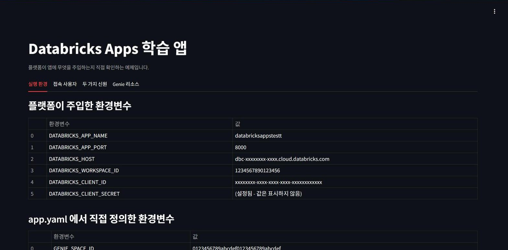
app.yaml의 valueFrom으로 받은 GENIE_SPACE_ID.시크릿 값은 화면에 출력하지 않고 설정 여부만 보여 줍니다. 로컬에서 실행하면 이 변수들이 없다고 표시됩니다.
탭 2. 접속 사용자

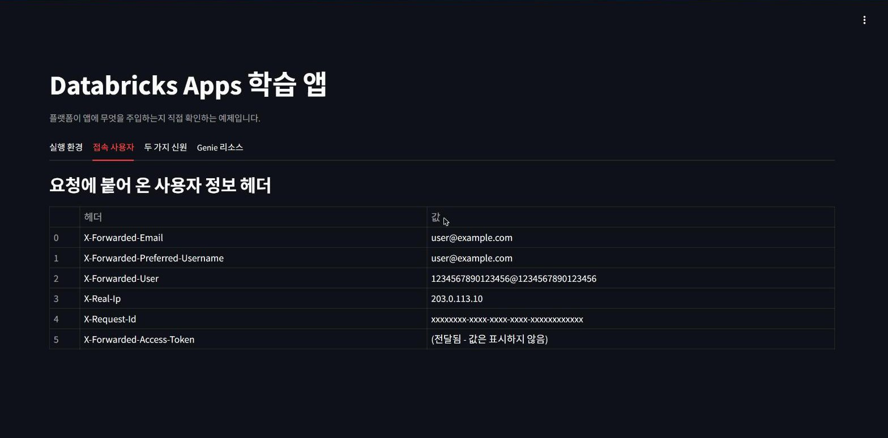
| 헤더 | 내용 |
|---|---|
X-Forwarded-Email | 사용자 이메일 |
X-Forwarded-Preferred-Username | 사용자 이름 |
X-Forwarded-User | 사용자 식별자 |
X-Forwarded-Host | 원래 요청한 호스트 |
X-Real-Ip | 클라이언트 IP |
X-Request-Id | 요청마다 다른 UUID |
X-Forwarded-Access-Token | 사용자 토큰. 사용자 인증에 씁니다. |
문서 확인 앞의 여섯 개는 HTTP 헤더 문서의 목록이고, 사용자 토큰 헤더는 인증 문서의 예제에 나옵니다. 이 헤더들은 플랫폼 위에서만 붙습니다.
탭 3. 두 가지 신원

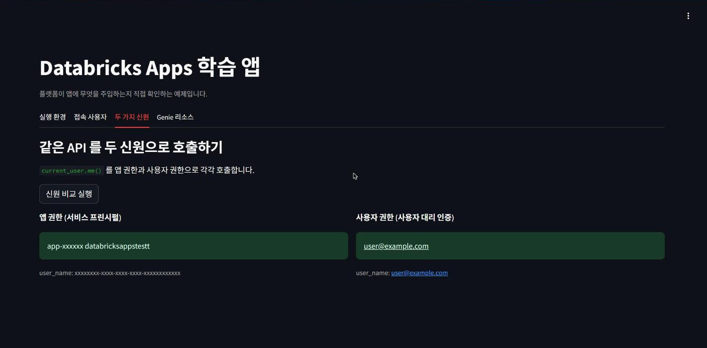
current_user.me() 호출인데 신원에 따라 결과가 다릅니다.왼쪽은 앱 권한으로 호출해 서비스 프린시펄(app-… databricksappstestt)이 나오고, 오른쪽은 사용자 토큰으로 호출해 접속한 사용자가 나옵니다. 8장의 표를 한 화면으로 보여 주는 탭입니다.
탭 4. Genie 리소스

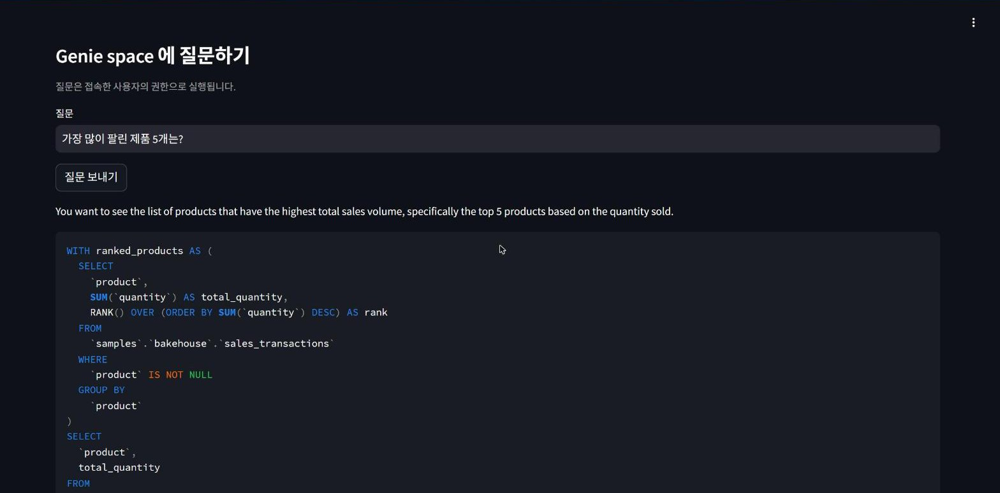

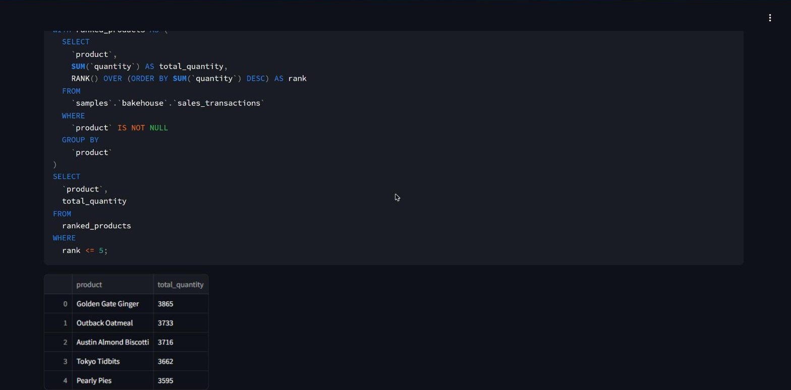
samples.bakehouse.sales_transactions를 조회했습니다.질문은 접속한 사용자의 권한으로 실행됩니다. 핵심 호출은 다음과 같습니다.
message = client.genie.start_conversation_and_wait(GENIE_SPACE_ID, question)
for attachment in message.attachments or []:
if attachment.text:
st.write(attachment.text.content) # Genie의 설명
if attachment.query:
st.code(attachment.query.query) # Genie가 만든 SQL문서 확인 이어지는 질문은 create_message_and_wait(space_id, conversation_id, content)로 보냅니다.
13. Databricks 권장 사항
공식 문서의 모범 사례 페이지에 나오는 항목입니다. 문서 확인
일반
- 데이터 처리는 Databricks 기능에 맡깁니다. 앱 컴퓨트는 화면 렌더링용입니다. 조회는 SQL warehouse, 추론은 모델 서빙, 배치는 잡으로 넘깁니다.
- 15초 안에 종료합니다. SIGTERM을 받고 15초가 지나면 SIGKILL로 강제 종료됩니다.
- 특권 작업을 하지 않습니다. 시스템 패키지 설치 같은 작업은 할 수 없습니다.
- 네트워크는 플랫폼에 맡깁니다. 리버스 프록시와 TLS는 플랫폼이 처리합니다. 앱은 H2C를 지원해야 하고, 자체 TLS를 구성하지 않습니다.
0.0.0.0과DATABRICKS_APP_PORT에서 리슨합니다. 포트를 고정하거나 localhost에 바인딩하지 않습니다.- 시작 시간을 줄입니다. 무거운 초기화는 뒤로 미룹니다.
- 로그는 stdout과 stderr로 냅니다.
- 전역 예외 처리를 둡니다. 예상하지 못한 오류로 앱이 죽지 않게 합니다.
- 의존성 버전을 고정합니다. uv를 권장하며,
requirements.txt를 쓰면 정확한 버전을 적습니다. - 입력을 검증합니다.
- 메모리 캐시를 씁니다.
functools.lru_cache나cachetools로 반복 조회를 줄입니다. - 오래 걸리는 작업은 비동기로 처리합니다. 동기 요청은 시간 초과가 날 수 있습니다.
보안
- 최소 권한을 줍니다. 앱 권한은 CAN USE부터 줍니다.
- 인증 방식을 신중히 고릅니다. 앱 인증과 사용자 인증의 차이를 알고 씁니다.
- 앱마다 전용 서비스 프린시펄을 씁니다.
- 환경을 워크스페이스로 나눕니다. 개발, 스테이징, 운영 앱을 서로 다른 워크스페이스에 둡니다.
- 데이터는 적절한 컴퓨트로 접근합니다.
- 시크릿은
valueFrom으로 관리하고 주기적으로 교체합니다. - scope를 최소로 하고 사용자 행위를 감사 로그로 남깁니다.
- 외부로 나가는 네트워크를 제한합니다.
- 안전하게 코딩합니다. SQL은 파라미터화합니다.
- 감사 로그를 모니터링합니다.
- 코드 보안 스캔 결과를 검토합니다. 앱의 Security 화면이 이 용도입니다.
문서는 사용자 인증을 앱 작성자를 신뢰할 수 있고 앱 코드를 동료가 검토하는 워크스페이스에서만 쓰라고 권합니다. 사용자 토큰을 받은 앱은 scope 안에서 그 사용자처럼 행동할 수 있기 때문입니다.
권장 개발 흐름
14. 문제 해결
| 증상 | 원인 | 해결 |
|---|---|---|
배포 실패: No command to run and no Python file found |
소스에 실행할 파일이 없습니다. 이 프로젝트의 첫 배포가 이 오류였습니다. | 앱 코드와 app.yaml의 command를 추가합니다. |
| 배포는 성공했는데 앱이 열리지 않음 | 포트를 고정했거나 localhost에 바인딩했습니다. | 0.0.0.0과 DATABRICKS_APP_PORT를 씁니다. Streamlit은 플랫폼 변수 덕분에 따로 지정하지 않아도 됩니다. |
| 사용자 토큰과 함께 SDK를 만들면 인증 오류 | 환경변수의 서비스 프린시펄 자격증명과 토큰이 함께 있어 SDK가 방식을 정하지 못합니다. | auth_type="pat"을 명시합니다. |
| 사용자 토큰 헤더가 없음 | 로컬 실행이거나, 앱에 사용자 권한 scope가 설정돼 있지 않습니다. | Settings > User authorization에서 scope를 추가합니다. |
| 앱 권한으로 조회하면 권한 오류 | 서비스 프린시펄에 자원이나 기반 테이블의 권한이 없습니다. | 리소스로 추가하고, 테이블은 USE CATALOG, USE SCHEMA, SELECT를 부여합니다. |
valueFrom 값이 비어 있음 |
리소스 키가 Settings의 Resource key와 다릅니다. | Environment 화면에서 변수 값을 확인하고 키를 맞춥니다. |
| push했는데 앱이 그대로 | 자동 배포가 꺼져 있습니다. | databricks apps deploy <앱> --git-branch main으로 다시 배포합니다. |
| 배포 실패: 파일 크기 | 10 MB를 넘는 파일이 소스에 있습니다. | 큰 파일은 Unity Catalog 볼륨에 두고 소스에서 뺍니다. |
| 빌드 중 패키지 설치 실패 | 외부 접속이 제한된 환경에서 패키지 저장소에 닿지 못합니다. | pypi.org, files.pythonhosted.org, registry.npmjs.org를 허용합니다. |
| 앱이 하루 뒤 꺼져 있음 | Free Edition은 시작·재배포 후 24시간이 지나면 앱을 자동으로 중지합니다. | databricks apps start <앱>으로 다시 시작합니다. |
15. 다음 실습
이 가이드의 내용을 손으로 익히기 좋은 순서입니다.
- 배포 한 바퀴 돌기.
app.py의 제목 문구를 바꾸고, push한 뒤 배포 명령을 실행해 Deployments 화면에 새 커밋이 올라오는지 봅니다. - 리소스 하나 더 붙이기. SQL warehouse를 리소스로 추가하고,
app.yaml에valueFrom을 적은 뒤 Environment 화면에서 값이 들어왔는지 확인합니다. - 사용자 권한으로 SQL 실행하기. 탭을 하나 추가해 사용자 토큰으로
SELECT current_user()를 실행하고, 탭 3의 결과와 비교합니다. - scope 빼 보기. User authorization에서
genie를 빼고 탭 4가 어떻게 실패하는지 본 뒤 다시 넣습니다. - 자동 배포 시험하기. 저장소를 private으로 바꿀 수 있다면 GitHub App을 설치하고 push만으로 배포되는지 확인합니다.
16. 확인 상태와 출처
확인하지 못한 것
- DBU당 금액(클라우드·요금제별)
- 일반 워크스페이스에서 유휴 앱이 자동으로 중지되는지 여부
- 요청 타임아웃의 정확한 값, WebSocket 지원 여부
- 로그 보존 기간, 지원 리전 목록
- Genie API에 필요한 최소 SDK 버전
- 사용자 인증 기능의 출시 단계 표기. 인증 문서에는 프리뷰 배너가 없었습니다.
- 배포 모드
SNAPSHOT과AUTO_SYNC의 정의. CLI에는 옵션이 있지만 문서 설명을 찾지 못했습니다.
읽은 공식 문서
AWS 문서 기준이며 2026-11-11에 읽었습니다. 기능은 자주 바뀌므로 작업 전에 원문을 다시 확인하는 편이 안전합니다.